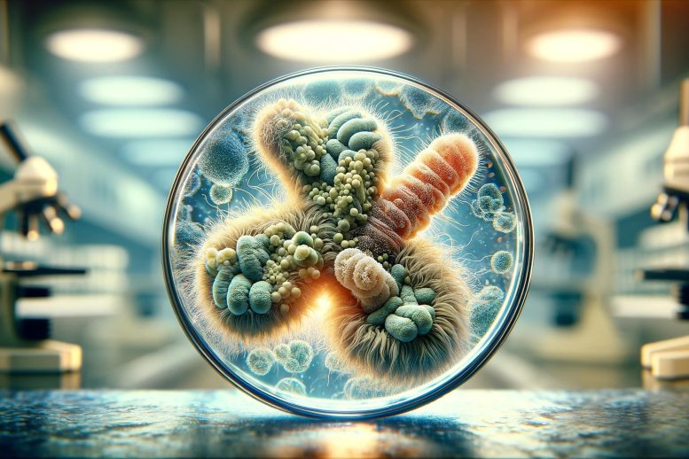
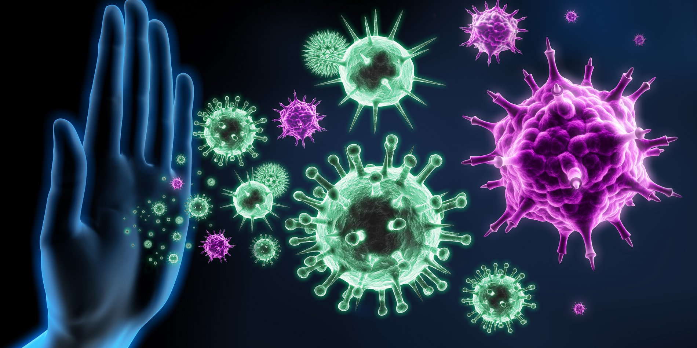
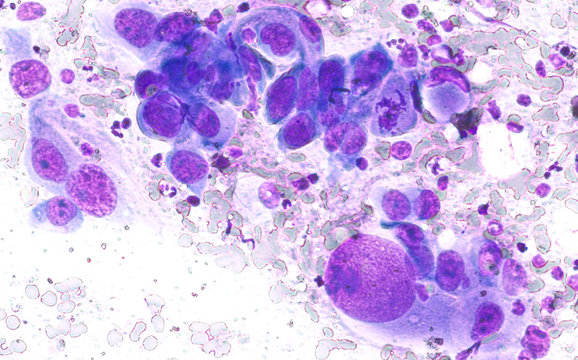
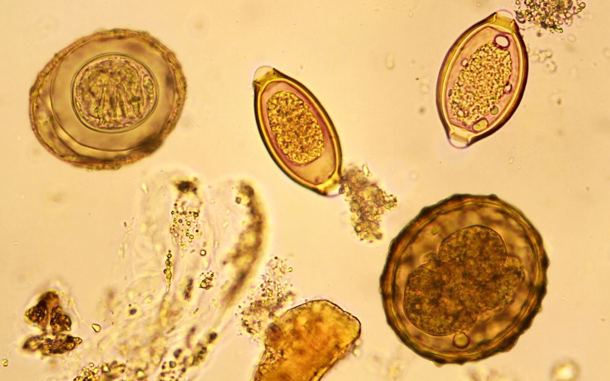

Hematology in medical laboratories focuses on analyzing
blood components to diagnose disorders like anemia, leukemia, and clotting abnormalities.
Tests include complete blood counts, blood smears,
and coagulation assays, crucial
for treatment guidance.Specialized equipment like hematology analyzers and microscope are utilized
for precise analysis.
Hematologists interpret results to guide treatment decisions and monitor patient response to
therapies.
Microbiology

Microbiology in medical laboratories investigates microorganisms causing infectious
diseases.
Techniques include culturing, staining, and molecular methods like PCR to identify bacteria,
viruses, fungi,
and parasites. Antibiotic susceptibility testing helps guide treatment decisions. Microbiologists
play a
crucial role in infection control and public health by identifying outbreaks and monitoring
antimicrobial
resistance.
Immunology

Immunology in medical laboratories analyzes the immune system's
response to infections, allergies, and autoimmune disorders.
Techniques include ELISA, flow cytometry, and immunofluorescence assays to measure antibodies,
cytokines, and immune cell populations. Immunologists provide crucial diagnostic insights
and monitor treatment efficacy, aiding in personalized patient care and disease management.
Cytology

Cytology in medical laboratories examines cells for abnormalities,
aiding in cancer diagnosis and screening. Techniques include Pap smears for cervical cancer,
fine needle aspiration for tissue sampling, and fluid cytology for effusions. Cytotechnologists and
pathologists analyze cell morphology
to detect precancerous or cancerous changes,
guiding patient management and treatment decisions.
Parasitology

Parasitology in medical laboratories involves identifying and diagnosing parasitic
infections in human samples like stool, blood, and tissue. Techniques include microscopy,
serological tests,
and molecular assays. Parasitologists play a critical role in public health by
detecting and managing parasitic diseases, informing treatment strategies, and preventing
transmission.
Pharmacology
Pharmacology in medical laboratories investigates the
effects of drugs on biological systems. Techniques include drug concentration measurements, receptor
binding assays, and toxicity testing.
Pharmacologists study drug interactions, metabolism, and efficacy to optimize
treatments and minimize adverse effects, contributing to safer and more effective medication use in
patient care.
Hematology in medical laboratories focuses on analyzing
blood components to diagnose and monitor disorders like anemia, leukemia, and clotting abnormalities. Tests
include complete blood counts, blood smears,
and coagulation assays, crucial
for patient care and treatment guidance.